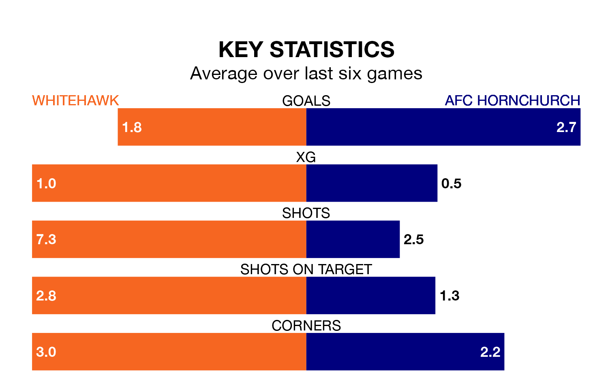

Two of the Isthmian Premier Division's meanest defences go head-to-head at the Enclosed Ground on Saturday, when AFC Hornchurch visit Whitehawk.
No teams have conceded fewer goals than Hornchurch to date: the away side have let in just 25 goals in 32 games.
The Hawks have conceded 43 goals in 31 games, giving them the joint-third tightest back line so far this season.
Hornchurch are top of the table after 32 games, of which they have won 24 and drawn seven, earning 79 points.
Whitehawk are 14 places behind the away team in 15th, with 11 wins and 11 draws putting them on 44 points.
The Hawks are in reasonable form in the Isthmian Premier Division, with three wins and three draws from their last six games.
With six wins and no losses over that period, Hornchurch's form is much better – they have taken 18 points from 18, compared to the hosts' 12.
Whitehawk's last match was on March 16, a 4-1 win against Kingstonian.
Hornchurch beat Billericay Town 4-1 last time out, also on March 16.
Updated: 10:19 (UTC), 22/03/24